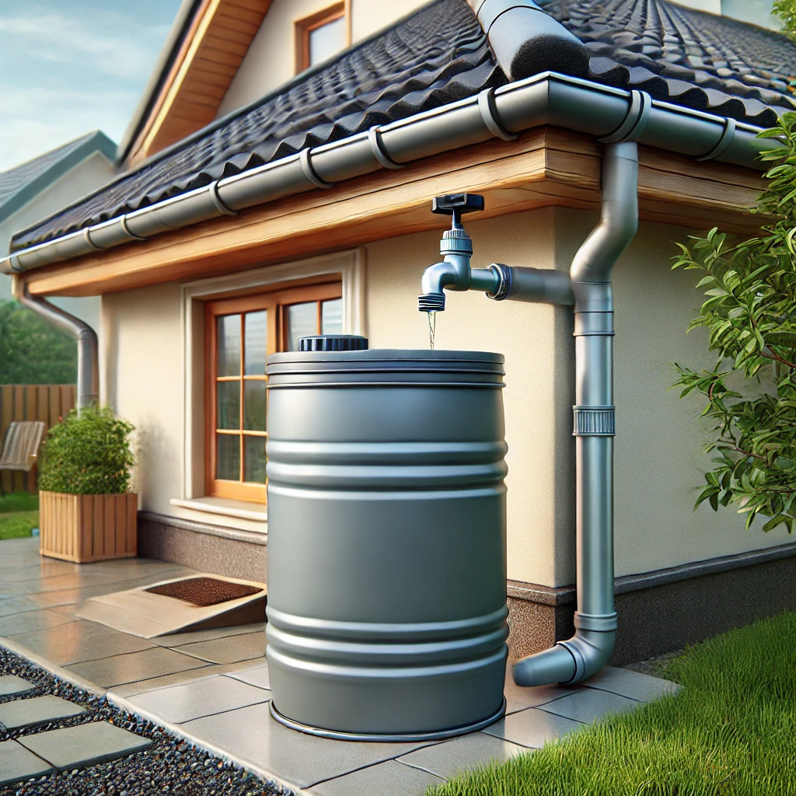
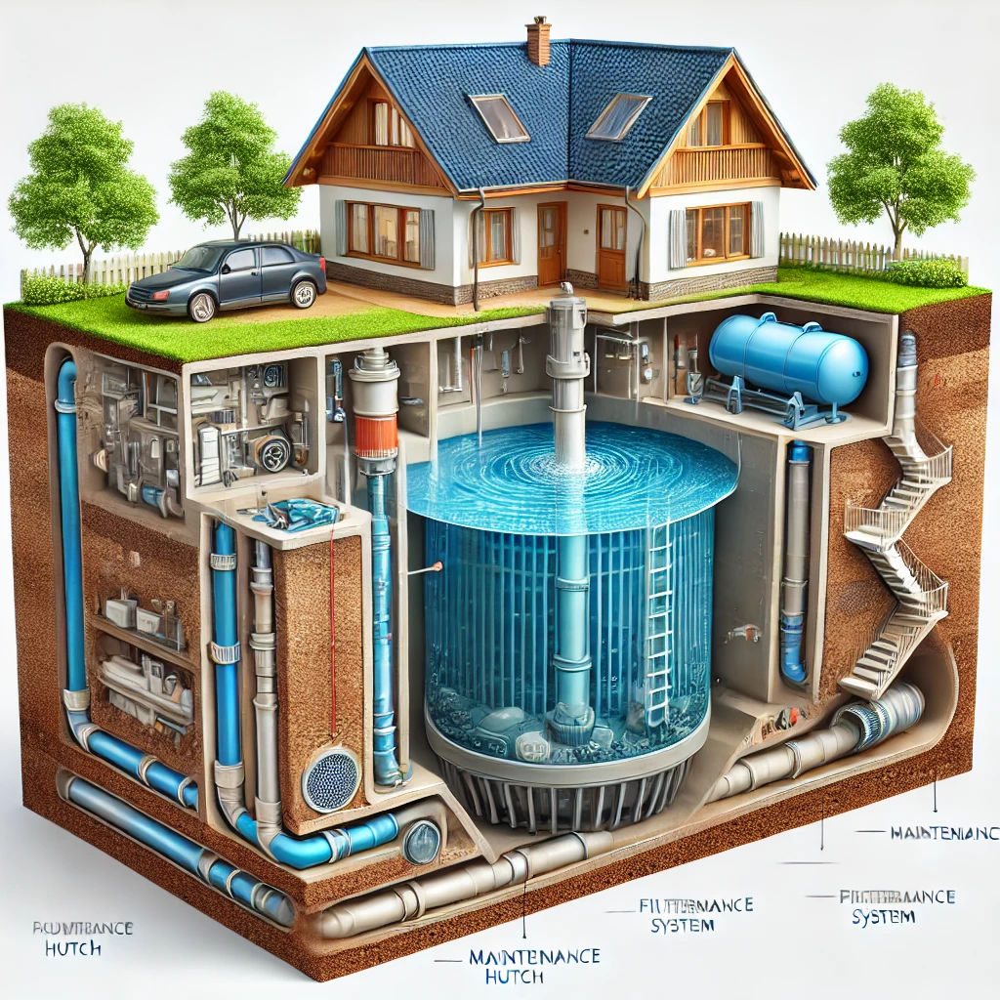
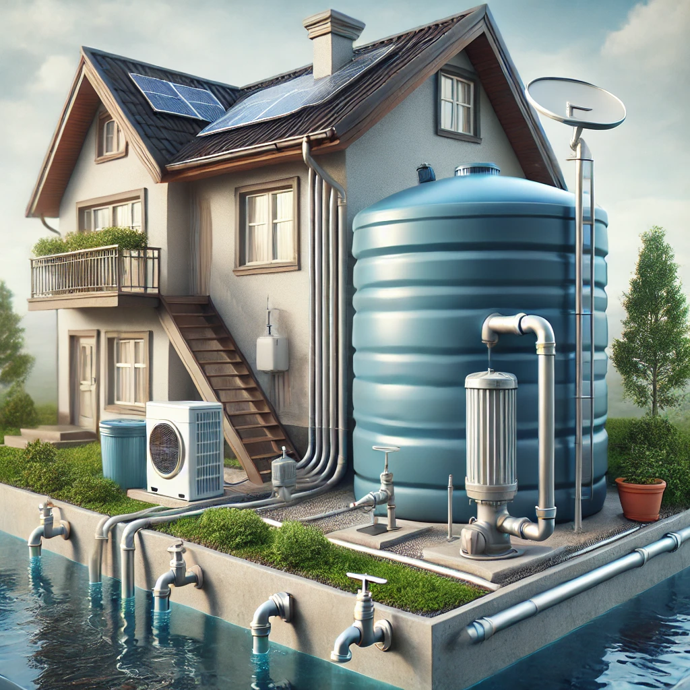
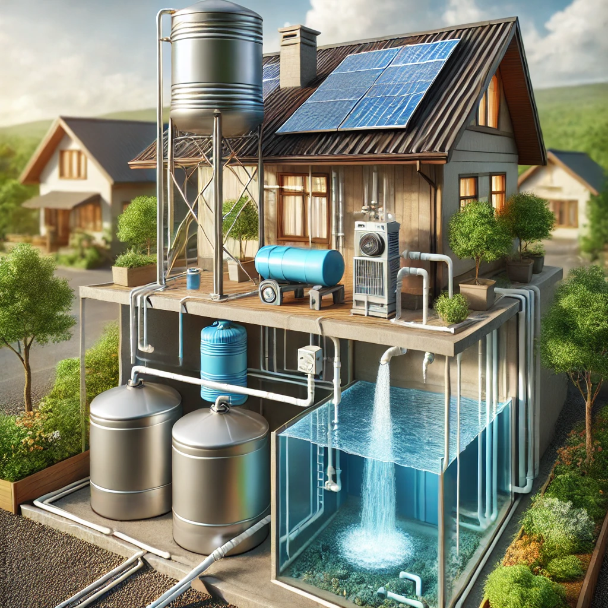
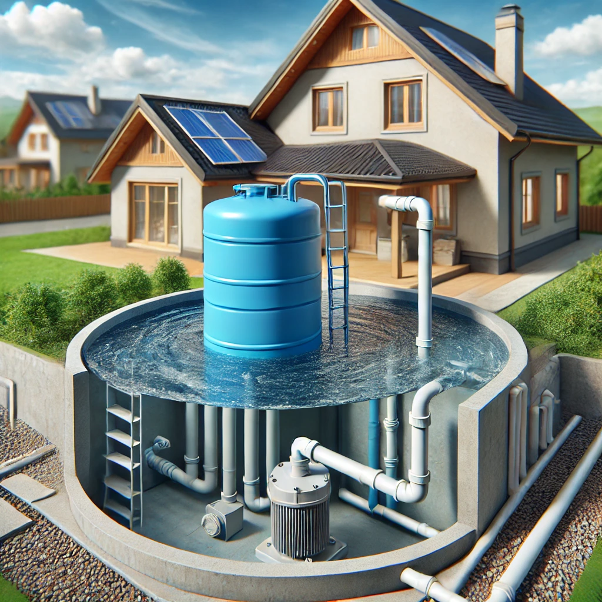
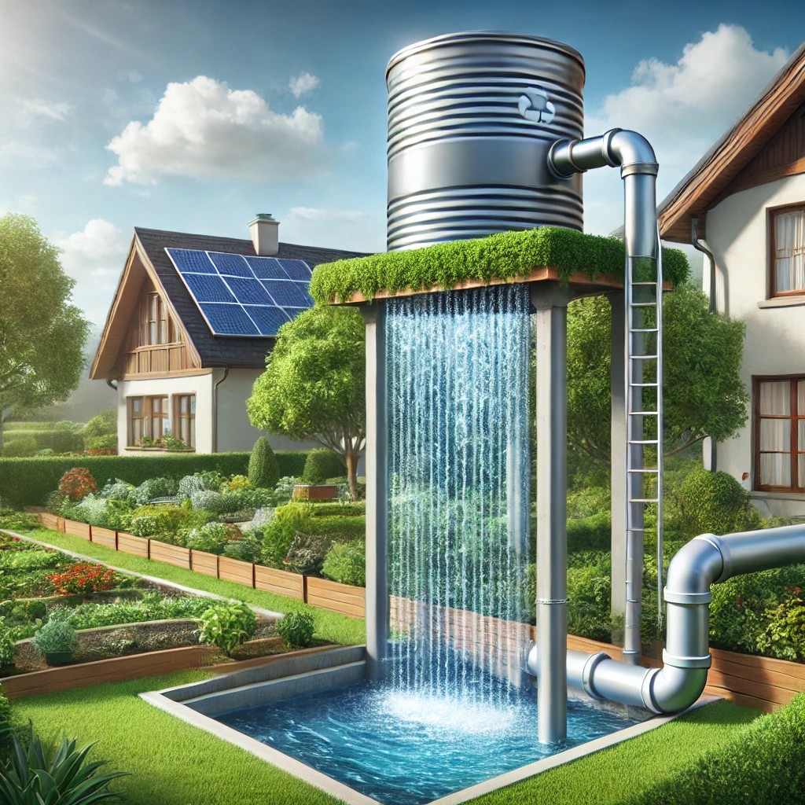
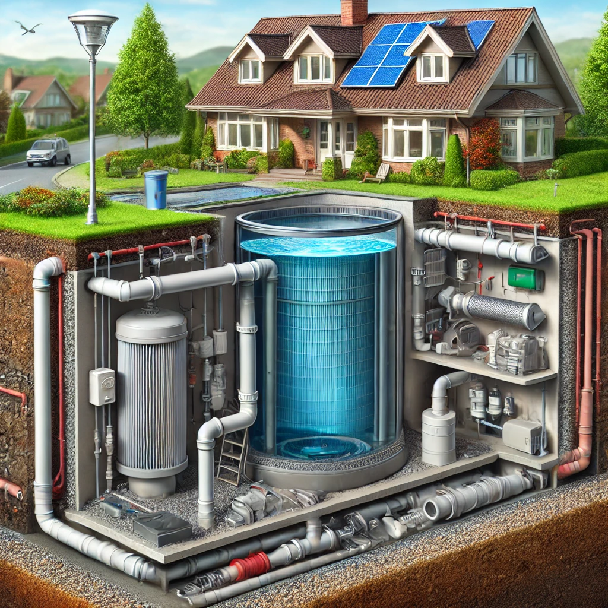

Introduction
Rainwater is a valuable natural resource, but when left unmanaged, it can cause severe environmental and infrastructural issues. In many urban areas, excessive rainwater leads to stagnant water pools, road damage, sewage overflow, and an increase in mosquito populations. These problems arise due to inadequate drainage systems, lack of proper water management, and rapid urbanization. Rainwater harvesting (RWH) is a sustainable solution that helps in collecting, storing, and utilizing rainwater effectively, reducing its negative impact on cities and communities.
One of the major consequences of unmanaged rainwater is the increase in mosquito populations. When rainwater gets trapped in potholes, clogged drains, and open spaces, it creates ideal breeding grounds for mosquitoes, leading to the spread of vector-borne diseases such as malaria and dengue. Additionally, stagnant water contributes to unhygienic conditions, foul odors, and contamination, affecting public health. Proper rainwater harvesting can prevent water stagnation by directing excess rainwater to storage tanks or underground recharge systems, thus reducing mosquito breeding and improving sanitation.
Another critical issue caused by rainwater mismanagement is road damage. When rainwater accumulates on roads and sidewalks, it weakens the asphalt and concrete, leading to cracks and potholes. Over time, these damages increase maintenance costs and pose safety risks to commuters. By implementing rainwater harvesting systems, excess water can be efficiently redirected for useful purposes such as irrigation, household consumption, or groundwater recharge, thereby preventing road erosion and infrastructure deterioration.
Furthermore, overflowing sewage systems during heavy rains are a common issue in urban areas. When drainage systems cannot handle excessive rainwater, it mixes with sewage, causing blockages and overflows. This results in the spread of harmful bacteria, environmental pollution, and increased repair costs. With rainwater harvesting, we can reduce the burden on sewage systems by collecting and utilizing rainwater in a controlled manner. Promoting awareness and adoption of RWH techniques can significantly improve urban water management, making cities cleaner, safer, and more sustainable.
Why Harvest Rainwater?
Rainwater harvesting is a crucial solution for sustainable water management, especially in areas facing water scarcity and infrastructure challenges. As freshwater resources deplete due to overuse and climate change, collecting and utilizing rainwater helps reduce dependency on traditional water sources like groundwater and municipal supply. By harnessing rainwater, communities can ensure a reliable and cost-effective water supply for drinking, domestic use, and irrigation, ultimately promoting long-term environmental sustainability.
Unmanaged rainwater can cause severe issues, including stagnant water pools, mosquito breeding, and the spread of waterborne diseases like malaria and dengue. When rainwater is left to collect in open spaces, potholes, and blocked drainage systems, it creates unhygienic conditions, affecting public health. Rainwater harvesting helps eliminate this problem by directing excess water into storage tanks or underground recharge systems, preventing water stagnation and improving urban sanitation.
Another major issue caused by rainwater mismanagement is damage to roads and infrastructure. Continuous exposure to standing water weakens roads, leading to cracks and potholes, increasing maintenance costs and posing safety hazards. Additionally, overwhelmed sewage systems during heavy rainfall result in blockages, overflows, and contamination of drinking water sources. By adopting rainwater harvesting, we can reduce the burden on drainage systems and prevent structural damage, ensuring better city planning and water conservation.
Rainwater harvesting is an environmentally friendly practice that not only addresses immediate water-related challenges but also contributes to long-term sustainability. It aids in groundwater recharge, reduces urban flooding, and promotes self-sufficiency in water usage. Encouraging individuals, communities, and industries to implement rainwater harvesting systems will lead to improved water security, healthier environments, and a more resilient urban infrastructure for future generations.
Rainwater harvesting offers several benefits, including:
- Reduces water bills
- Prevents water wastage
- Reduces dependency on groundwater
- Prevents urban flooding
- Provides an alternative water source during droughts
- Prevents road damages
- Reduces mosquitoes breeding
Components of Rainwater harvesting
There are different components available in the rainwater harvesting system. They are
- Collection pipe
- Tank
- Treatment
- Pump
- Cistern
- Distribution pipe
- Controls

Let’s see the function of each component one by one
Collection pipe
The collection pipe is responsible for channeling rainwater from rooftops, terraces, or other catchment areas into the storage system. It is typically made of PVC or metal and is designed to transport water efficiently while preventing debris and contaminants from entering the system.
Tank
The tank serves as the main storage unit for harvested rainwater. It can be made of concrete, plastic, fiberglass, or metal and varies in size depending on the water demand. Tanks must be properly sealed to prevent contamination and algae growth. Some systems also incorporate underground tanks to save space and reduce evaporation.
Treatment
Treatment is necessary to ensure that harvested rainwater is safe for use. Filtration systems such as mesh screens, sand filters, activated carbon filters, and UV treatment units help remove dust, debris, and microorganisms. Depending on the intended use (drinking, irrigation, or industrial), additional purification methods such as chlorination or reverse osmosis may be used.
Pump
A pump is used to transport stored water from the tank to different usage points. It ensures steady water pressure for domestic, agricultural, or industrial applications. Pumps can be manual or electric, and some systems use solar-powered pumps for greater energy efficiency.
Cistern
A cistern is an additional water storage container, often used when the main tank is full or to store treated water separately. Cisterns can be placed above ground or underground and act as backup reservoirs to ensure a continuous water supply.
Distribution Pipe
The distribution pipe carries harvested rainwater from the storage tank or cistern to various usage points such as homes, gardens, or irrigation fields. It is designed to minimize leakage and contamination while ensuring an efficient flow of water.
Controls
Control mechanisms regulate the functioning of the rainwater harvesting system. This includes valves, sensors, float switches, and automated control panels that monitor water levels, flow rate, and filtration efficiency. Proper controls ensure smooth operation, prevent overflow, and help manage water usage effectively.
Each of these components plays a vital role in making rainwater harvesting a reliable and sustainable water management solution. By integrating these elements efficiently, individuals and communities can optimize rainwater use for various applications.
Types of Rainwater Harvesting
There are eight main types of rainwater harvesting systems as listed below.
1. Water Butt
A water butt is the simplest form of rainwater harvesting, commonly used in households for gardening and outdoor use. It consists of a small storage container that collects rainwater directly from a downpipe connected to a rooftop. The stored water is used for watering plants, cleaning, or other non-potable uses.
2. Direct Pumped – Submersible
In this system, a submersible pump is placed inside an underground or above-ground storage tank. The pump automatically pushes the water into the building’s supply system when needed. This type is often used for irrigation and domestic applications.
3. Direct Pumped – Suction
Unlike the submersible system, a suction pump is placed outside the tank, usually near the building, and draws water from the storage tank when required. This system is easier to maintain than submersible pumps but may require priming.
4. Indirect Gravity
This system uses an intermediate storage tank located at an elevated position (e.g., an attic). Rainwater is first pumped from the main collection tank to this elevated tank, and then gravity is used to distribute it throughout the building.
5. Indirect Pumped
Similar to the indirect gravity system, but instead of relying on gravity, a secondary pump distributes water throughout the building. This system offers flexibility in pressure control and water usage.
6. Gravity Only
This system relies entirely on gravity for water collection and distribution, eliminating the need for pumps. It requires the storage tank to be placed at an elevated height, allowing water to flow naturally to various outlets.
7. In-Ground Storage
In this system, rainwater is stored in an underground tank, helping to save space and prevent evaporation. These tanks are durable and can be made from concrete, plastic, or fiberglass.
8. Retention Ponds

Retention ponds are large-scale rainwater collection systems designed to store and manage runoff water in urban or agricultural areas. They help prevent flooding and improve groundwater recharge.
Choose a right one for your home
Finding the right rainwater harvesting installer for your property might be tricky.
1. Find out if your site is suitable
You may have to analyse the spacing for the underground tank, a measure of rainfall in the area, capacity for a raised tank, requirements for installing the pipe system, roof space type, and area for rainwater collection. If you’re planning to install an underground water tank in the garden, you will have to concentrate on the area and space beforehand for installation and excavation. For commercial premises, rainwater harvesting from the roof should be the better option. The factors for installing a pipe system for rainwater harvesting should also be considered. When it comes to rooftops, mostly flat roofs have more efficiency when compared to sloped ones in that they have a larger area from where water can be collected potentially.
2. Decide on the type and size of the rainwater harvesting system you are going to install
We have already seen the different types of rainwater harvesting systems above. Now, let us see how to calculate the size of a rainwater harvesting system that you need. Before deciding the size of the tank, it is important to consider the following factors.
- The area you live in – To calculate the approximate amount of rainfall in your area
- Number of people living in the property
- Roof size – To roughly determine the amount of rainfall that could be potentially collected
- Amount of water needed for the garden
- Number of bedrooms on your property
- Amount of drought protection needed
For domestic use, the following details can help if you are looking for a simple guide. You may require a 1500 litre tank for 1 to 2 occupants if you are aiming for limited or nil garden irrigation. You may require a 3000 litre tank for 2 to 4 occupants if you are aiming for limited or nil garden irrigation. You may require a 5000 litre tank for 4 to 6 occupants if you are aiming for occasional garden irrigation. You may require a 7500 litre tank for more than 4 occupants if you are aiming for regular garden irrigation. You may require a 15000 litre tank for more than 4 occupants if you are aiming for extensive garden irrigation. If the harvested rainwater is going to be used for garden maintenance, you can consider the following based on a water butt of 100 litres supplying a water can of 1 litre. 100 days of supply is provided when 1 water can is used per day. 50 days of supply is provided when 2 water cans are used per day. 33 days of supply is provided when 3 water cans are used per day. 25 days of supply is provided when 4 water cans are used per day.
3. The budget
The most important point to consider when it comes to choosing the right rainwater harvesting system for your property is the budget. For an average-sized home, the equipment cost for installing the rainwater harvesting system can be around ₹3000. The waterbutt is the simplest rainwater harvesting system. The amount of piping and the roof conversion for the collection of water can also play a significant role in the overall cost. A commercial rainwater harvesting system of the same size as the domestic one will usually cost around the same. However, large rainwater harvesting systems for commercial establishments can provide great benefits mostly in a couple of years.
4. Installers
When looking for a rainwater harvesting system installer for your property, consider the following factors.
- The number of years they have been in business
- Reviews and testimonials
- Liability insurance covers
- Attachment to trade unions
Watch & Learn
Here are some helpful videos to understand rainwater harvesting better:
Contact Us
If you need more details or assistance, reach out to us through Mail or Phone